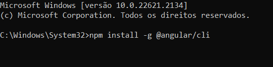
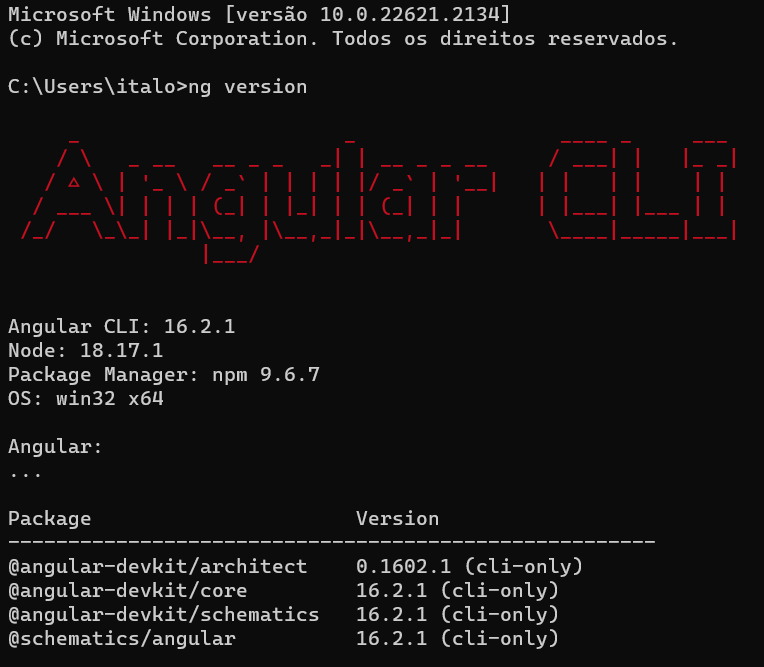
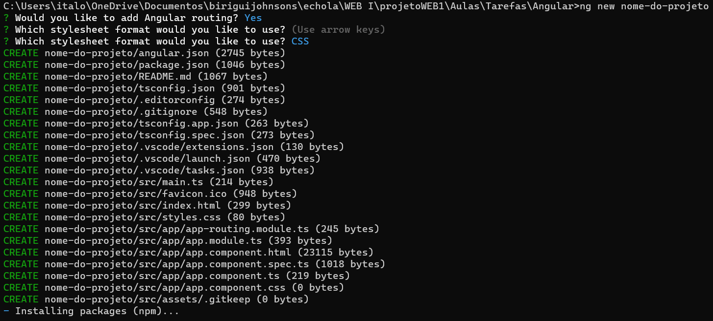
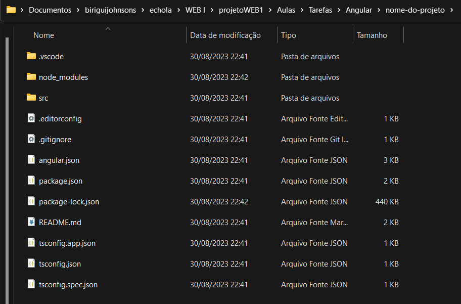
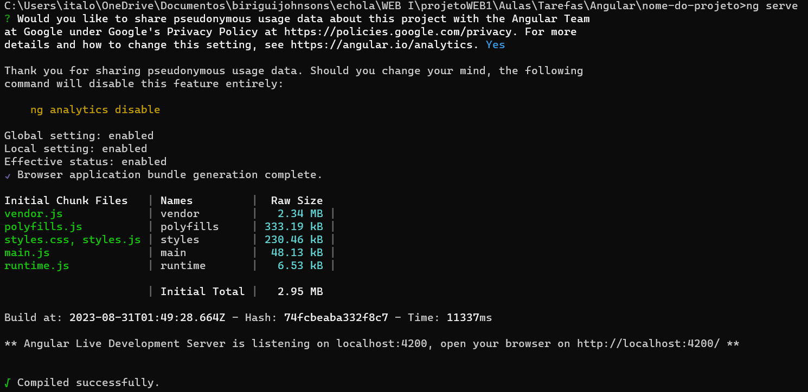
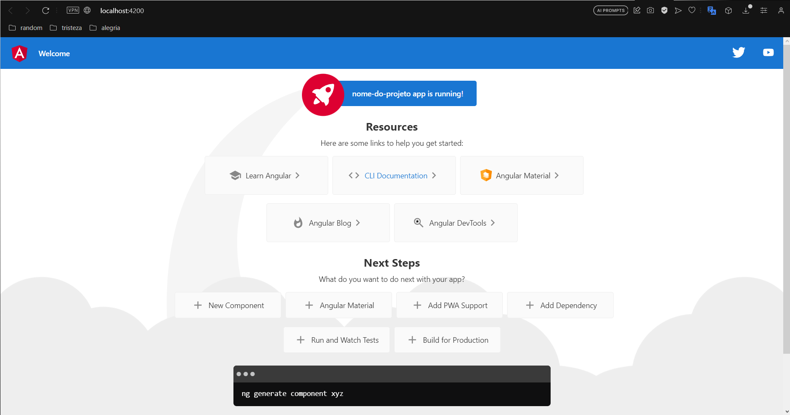

O Angular é um framework de desenvolvimento front-end amplamente utilizado para a criação de aplicações web dinâmicas e interativas. Desenvolvido e mantido pelo Google, o Angular fornece uma estrutura robusta para construir interfaces de usuário modernas, facilitando a criação de aplicações complexas e escaláveis.
O Angular 2, lançado em 2016, trouxe uma reformulação significativa em relação à primeira versão. Introduziu o conceito de componentes, facilitando a construção de interfaces de usuário modulares e reutilizáveis. Além disso, adotou uma abordagem baseada em TypeScript, trazendo tipagem estática e outras melhorias de linguagem para o desenvolvimento.
O Angular 4, lançado em 2017, trouxe melhorias significativas em termos de tamanho do pacote, desempenho e usabilidade. Além disso, introduziu recursos como ngIf com else, animações mais eficientes e um novo módulo HTTP client.
O Angular 5, lançado em novembro de 2017, concentrou-se em melhorias de desempenho, diminuição do tamanho do pacote gerado e introduziu novos recursos como a compilação incremental.
O Angular 6, lançado em abril de 2018, trouxe recursos como o Angular Elements, que permite criar componentes Angular como Web Components, além de melhorias no CLI e no sistema de compilação.
O Angular 7, lançado em outubro de 2018, focou em melhorias de desempenho, atualizações de CLI, recursos de acessibilidade e introduziu o Angular Material CDK (Component Dev Kit).
O Angular 8, lançado entre março e abril de 2019, trouxe melhorias no carregamento do aplicativo, otimizações de renderização e recursos como ngUpgrade para facilitar a migração de aplicações legadas.
O Angular 9, lançado entre outubro e novembro de 2019, trouxe melhorias de desempenho, atualizações de dependências e a introdução do Ivy Renderer como opção experimental, prometendo melhorar ainda mais o desempenho e o tamanho do pacote.
A versão mais recente do Angular continua a evoluir com melhorias contínuas de desempenho, usabilidade e recursos. Certifique-se de verificar a documentação oficial e as notas de lançamento para obter as informações mais atualizadas sobre o Angular. Para saber mais sobre realases e patch novos, Acesse: https://angular.io/guide/releases
O Angular CLI (Command Line Interface) é uma ferramenta essencial para o desenvolvimento Angular, pois facilita a criação, compilação e gerenciamento de projetos. Para instalar o Angular CLI, siga os seguintes passos:
npm install -g @angular/cliNo prompt deve estar dessa forma:
Após a instalação do Angular CLI, você pode verificar se tudo ocorreu corretamente executando o seguinte comando:
ng versionNo prompt deve estar dessa forma:
Com o Angular CLI instalado, você pode criar um novo projeto facilmente:
ng new nome-do-projetoNo prompt deve estar dessa forma:
No seu diretório deve estar dessa forma após isso:
Depois de criar o projeto, navegue até o diretório do projeto usando o terminal:
cd nome-do-projeto
ng serveNo prompt deve estar dessa forma:
Isso compilará o projeto e iniciará um servidor de desenvolvimento.
Acesse a aplicação em http://localhost:4200/.
No seu navegador deve estar dessa forma:
Este é um guia básico para começar com o Angular. Consulte a documentação oficial do Angular para aprender mais.